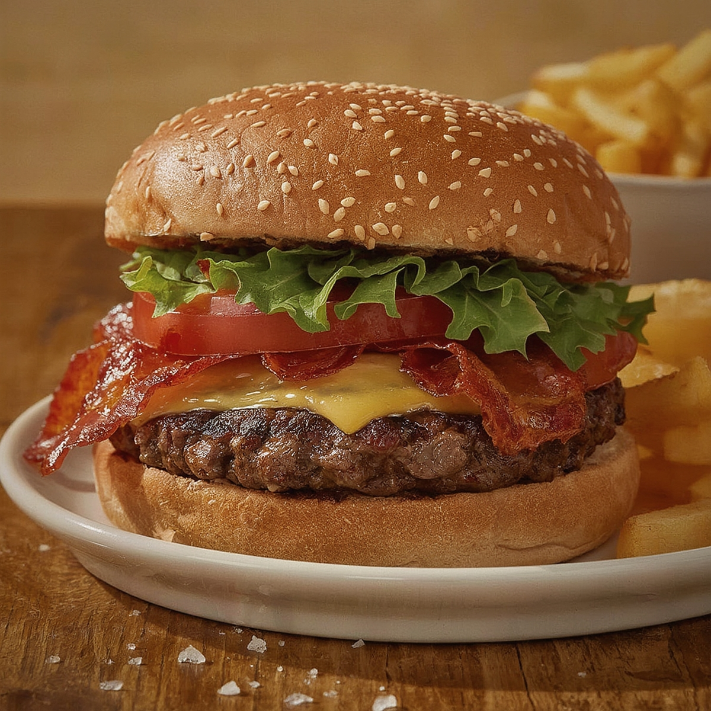

Easy Smash Burger

Home
Description
A smash burger is quite different to a regular burger. Where a regular
burger is shaped into a thick patty before cooking, and is flipped a
couple of times on the BBQ, a smash burger is shaped into a ball and
pressed down using a burger press until extra thin. This means it cooks
quickly and has a mouthwateringly tasty crust.
When the burger patty is smashed down on the flat top the fat from the
mince seeps back up into the burger, so you are basically cooking the
burger in its juices. This makes for an extra flavorful burger!
Ingredients
- 500 g (1.1lb) minced (ground) beef
- ¼ tsp salt
- ¼ tsp pepper
- 8 slices cheese
- 4 brioche buns
- 1 romaine lettuce
- 4 tbsp burger sauce
- ½ small onion
- 12 slices pickled gherkins (or burger pickle slices)
Steps
-
Remove the minced beef from the fridge and leave it to come up to room
temperature for 1 hour before cooking.
-
Prepare all of your burgers fixings before starting cooking – as it goes
very quickly!
-
Heat two large flat griddle pans or a flat top BBQ to a high heat (I
don't oil the flat top, as I use quite high-fat (20%) minced beef, but
you can brush with a little oil if you prefer).
-
Whilst the pan is heating up, divide the meat into 8 equal portions and
roll each portion into a ball, pressing the fibres of the meat together.
-
Season the top of each ball with salt and pepper. I use about 1/4 tsp
each of salt and pepper for this. Add the balls to the cooking surface,
seasoning side down, making sure you leave enough space to squash the
burgers down.
-
Place a small piece (about 15x15cm) of baking parchment on top of each
of the meat balls and squash the burgers down using a burger smasher or
double spatulas, pressing quite hard as you want that thin 'smashed'
burger. It should look 'lacy' with little holes in. You want each ball
to be slightly wider than the burger bun, as it will shrink a little
during cooking.
-
Remove the parchment paper. If you like a well-seasoned burger, season
each burger (again about 1/4 tsp each of salt and pepper altogether – so
both sides are seasoned). Allow to cook for 2 minutes to build up a
crust. Use a spatula or scraper with a thin edge to scrape up each
burger and flip it over.
-
Add a slice of cheese to each burger. Cover each burger with a cloche
for 30 seconds to help melt the cheese. *The cloche is optional!* Don't
worry if you don't have cloches – the heat of the burger will still help
to melt the cheese. I have 4 cloches, so I put put these on 4 of the
burgers for 30 seconds, then move them to the other 4. Cook the burgers
for a further minute.
-
Double up the burgers (so you now have four double cheeseburgers) and
remove them from the flat top. Place on a warm plate or tray to rest for
a minute while you get the bits ready to build the burgers.
-
Build the burgers up, starting with the bottom bun, then lettuce,
tomato, the double smashed burger, burger sauce, finely diced onion and
pickles. Top with the other half of the bun and serve.